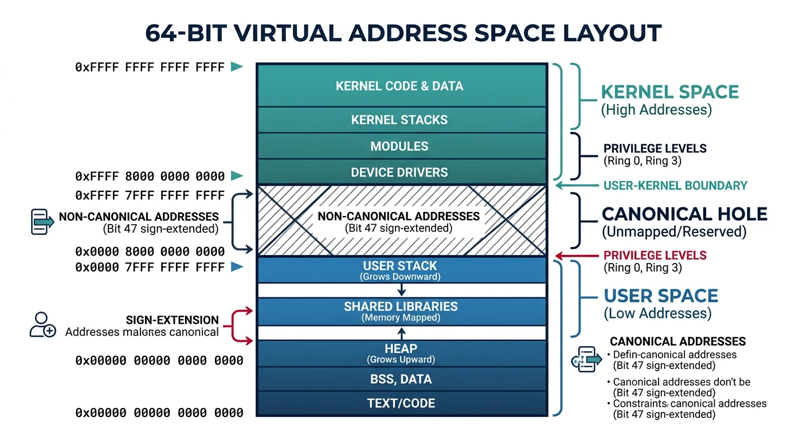
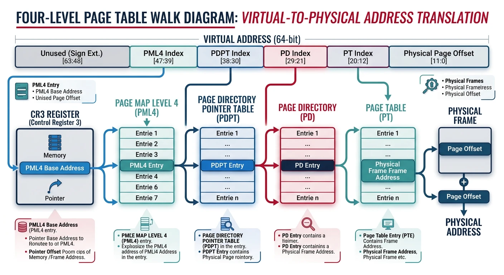
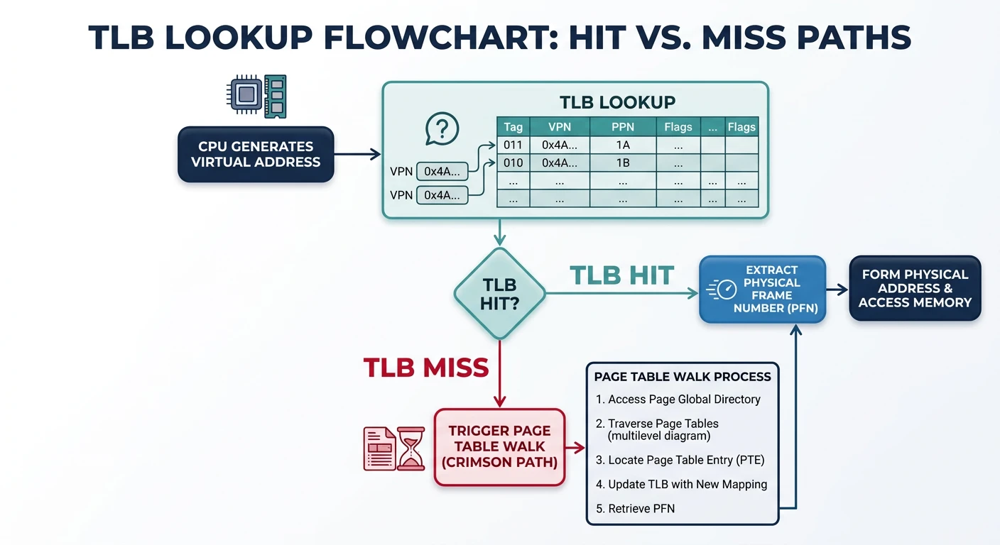
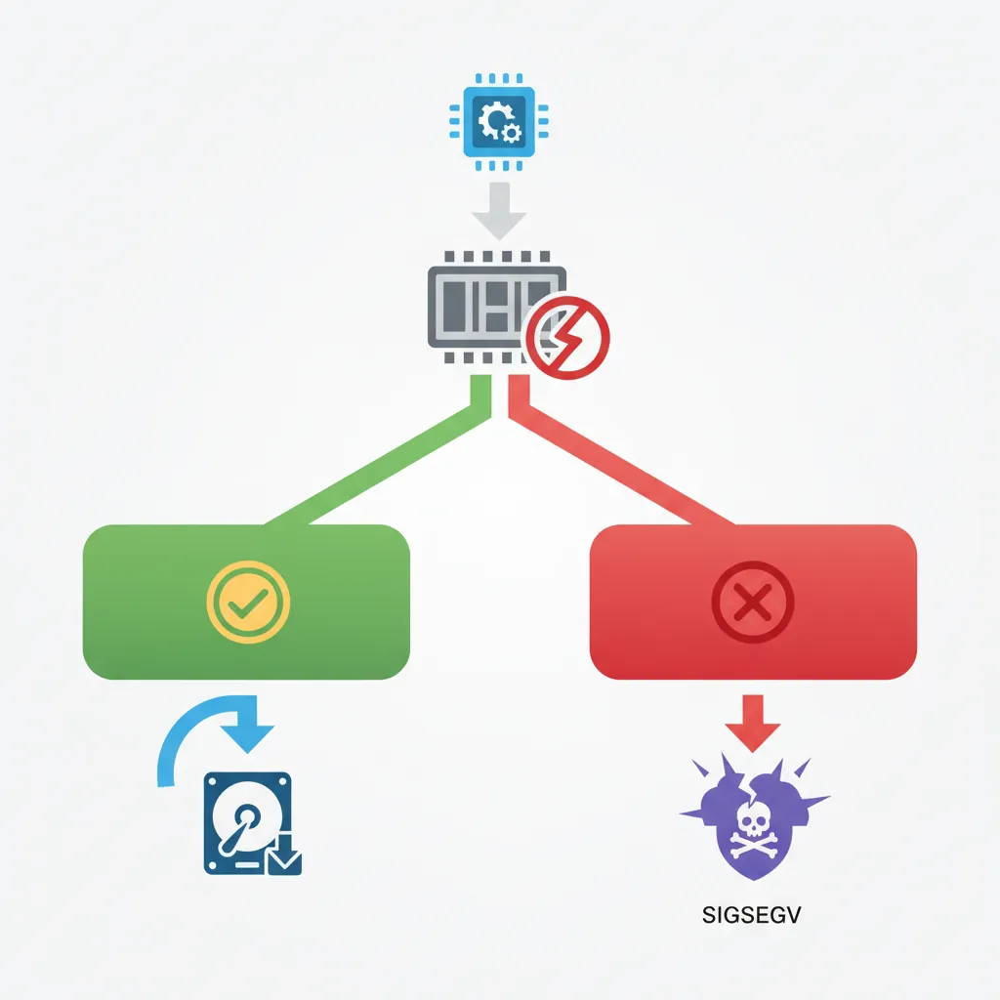
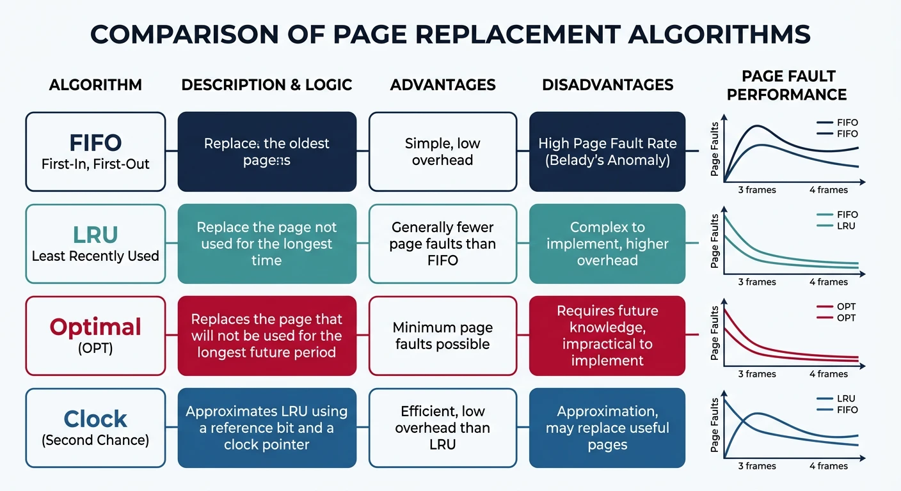

Virtual memory creates the illusion that each process has its own large, contiguous address space. This abstraction enables memory protection, process isolation, and efficient memory utilization.
Series Context: This is Part 16 of 24 in the Computer Architecture & Operating Systems Mastery series. Building on memory management fundamentals, we explore virtual memory in depth.
The Magic of Virtual Memory: Every process thinks it has 256 TB of contiguous memory, even on a machine with 16 GB RAM. How? Virtual memory creates this powerful illusion.
Virtual Addressing
Virtual memory gives each process its own private address space, mapped to physical memory by the MMU (Memory Management Unit).

Virtual address space layout showing user space (lower half) and kernel space (upper half) separated by the non-canonical hole in a 64-bit architecture
Virtual Memory Benefits
Why Virtual Memory?
══════════════════════════════════════════════════════════════
1. ISOLATION
• Each process has private address space
• Process A cannot access Process B's memory
• Buggy program can't crash the whole system
2. ABSTRACTION
• Programs don't need to know physical addresses
• Same virtual addresses work on any machine
• Simplifies programming model
3. EFFICIENT MEMORY USE
• Only active pages need physical RAM
• Inactive pages can live on disk (swap)
• Sparse address spaces don't waste RAM
4. SHARING
• Multiple processes can share same physical pages
• Shared libraries loaded once, mapped many times
• fork() uses copy-on-write (COW)
5. FLEXIBILITY
• Memory can be relocated without program changes
• OS can defragment physical memory transparently
64-bit Virtual Address Space:
━━━━━━━━━━━━━━━━━━━━━━━━━━━━━━━━━━━━━━━━━━━━━━━━━━━━━━━━━━━━
0xFFFFFFFFFFFFFFFF ┌─────────────────────┐
│ Kernel Space │ (upper half)
│ │
0xFFFF800000000000 ├─────────────────────┤
│ (non-canonical) │ Hole - unused
0x00007FFFFFFFFFFF ├─────────────────────┤
│ User Space │ (lower half)
│ 256 TB available! │
0x0000000000000000 └─────────────────────┘
Page Tables
The page table maps virtual pages to physical frames. Modern systems use multi-level page tables to save memory.

Four-level page table walk in x86-64: CR3 → PML4 → PDPT → PD → PT → Physical Frame, with 9-bit indices at each level
Why Multi-Level? Single-level table for 48-bit addresses with 4KB pages would need 2^36 entries × 8 bytes = 512 GB per process! Multi-level only allocates tables for used regions.
Translation Lookaside Buffer (TLB)
The TLB is a cache for page table entries. Without it, every memory access would require 4 extra memory accesses!

TLB lookup process: a hit returns the physical frame in ~1 cycle, while a miss triggers a page table walk costing 15–30 cycles
TLB Operation
TLB Lookup Process:
══════════════════════════════════════════════════════════════
┌─────────────┐
Virtual Address ───────→│ TLB │
│ Cache │
└──────┬──────┘
│
┌────────────────┼────────────────┐
│ │ │
TLB HIT TLB MISS TLB MISS
(~1 cycle) (hardware) (software)
│ │ │
▼ ▼ ▼
Get frame# Page Table OS Handler
immediately Walk (older CPUs)
(15-30 cycles)
│
▼
Update TLB
│
▼
Physical Address
Typical TLB Specifications:
━━━━━━━━━━━━━━━━━━━━━━━━━━━━━━━━━━━━━━━━━━━━━━━━━━━━━━━━━━━━
Component Entries Miss Penalty
━━━━━━━━━━━━━━━━━━━━━━━━━━━━━━━━━━━━━━━━━━━━━━━━━━━━━━━━━━━━
L1 iTLB 64-128 ~7 cycles (L2 TLB hit)
L1 dTLB 64-128 ~7 cycles
L2 TLB (unified) 512-2048 ~30 cycles (page walk)
TLB hit rate typically >99% due to locality!
# View TLB statistics on Linux
$ perf stat -e dTLB-loads,dTLB-load-misses ./my_program
1,234,567,890 dTLB-loads
123,456 dTLB-load-misses # 0.01% miss rate
# Flush TLB (happens on context switch, CR3 reload)
# Each process has different page tables → TLB must be flushed
# PCID (Process Context ID) allows keeping multiple process entries
Demand Paging
Demand paging loads pages into memory only when accessed. No need to load entire program at startup!
Demand Paging Concept:
══════════════════════════════════════════════════════════════
Traditional (Eager) Loading:
┌─────────────────────────────────────────────────────────────┐
│ Load ALL pages of program into RAM before starting │
│ • Slow startup │
│ • Wastes memory on unused code paths │
└─────────────────────────────────────────────────────────────┘
Demand Paging (Lazy Loading):
┌─────────────────────────────────────────────────────────────┐
│ Load pages ONLY when accessed (page fault triggers load) │
│ • Fast startup (load only what's needed) │
│ • Memory efficient (unused pages never loaded) │
└─────────────────────────────────────────────────────────────┘
Page States:
━━━━━━━━━━━━━━━━━━━━━━━━━━━━━━━━━━━━━━━━━━━━━━━━━━━━━━━━━━━━
1. Not in memory, not on disk
• Uninitialized (zero page on first access)
2. Not in memory, on disk
• Swapped out, or file-backed but not loaded
• Page fault → load from disk
3. In memory, clean
• Loaded and unmodified
• Can be discarded (file-backed) or swapped
4. In memory, dirty
• Modified since load
• Must write to disk before eviction
Page Faults
A page fault occurs when accessing a page not in physical memory. The OS handles it and resumes execution.

Page fault handling: the OS determines if the fault is valid (load page from disk) or invalid (send SIGSEGV to process)
Page Fault Handling
Page Fault Sequence:
══════════════════════════════════════════════════════════════
1. CPU executes instruction accessing virtual address
2. MMU checks TLB - MISS
3. MMU walks page table - finds Present bit = 0
4. MMU raises PAGE FAULT exception
5. CPU traps to OS page fault handler
6. OS determines fault type:
┌─────────────────────────────────────────────────────────┐
│ VALID PAGE FAULT (legitimate, recoverable): │
│ • Page swapped out → load from swap │
│ • File-backed page → load from file │
│ • Zero page (BSS) → allocate zeroed frame │
│ • Copy-on-write → copy page, update mapping │
├─────────────────────────────────────────────────────────┤
│ INVALID PAGE FAULT (error, unrecoverable): │
│ • Address not in process's address space │
│ • Permission violation (write to read-only) │
│ → Send SIGSEGV (segmentation fault) to process │
└─────────────────────────────────────────────────────────┘
7. For valid fault:
a. Find free frame (may need to evict another page)
b. Load page into frame (I/O - SLOW!)
c. Update page table entry (Present=1, frame number)
d. Resume faulting instruction
Page Fault Cost:
━━━━━━━━━━━━━━━━━━━━━━━━━━━━━━━━━━━━━━━━━━━━━━━━━━━━━━━━━━━━
SSD page fault: ~50-100 microseconds
HDD page fault: ~5-10 milliseconds
Memory access: ~100 nanoseconds
Page fault is 1000-100,000× slower than memory access!
Page Replacement Algorithms
When RAM is full, which page do we evict? The page replacement algorithm decides.

Page replacement algorithm comparison: Optimal provides the theoretical lower bound, LRU approximates it, while FIFO can suffer from Bélády's anomaly
Page Replacement Algorithms:
══════════════════════════════════════════════════════════════
1. OPTIMAL (OPT) - Theoretical best
• Evict page that won't be used for longest time
• Requires future knowledge - impossible in practice!
• Used as benchmark for other algorithms
2. FIFO (First-In, First-Out)
• Evict oldest page
• Simple queue implementation
• Belady's Anomaly: More frames can cause MORE faults!
3. LRU (Least Recently Used)
• Evict page unused for longest time
• Good approximation of OPT (uses past as future predictor)
• Expensive: must track access order
4. CLOCK (Second Chance)
• Approximates LRU with less overhead
• Pages arranged in circular list with reference bit
• On eviction: if ref=1, clear and skip; if ref=0, evict
CLOCK Algorithm Visualization:
━━━━━━━━━━━━━━━━━━━━━━━━━━━━━━━━━━━━━━━━━━━━━━━━━━━━━━━━━━━━
┌──── Clock hand (victim pointer)
▼
┌───────┐
│ P1: 1 │ ← Reference bit = 1 (recently used)
└───────┘
/ \
┌───────┐ ┌───────┐
│ P4: 0 │ │ P2: 1 │
└───────┘ └───────┘
\ /
┌───────┐
│ P3: 0 │ ← ref=0, EVICT this page!
└───────┘
Hardware sets reference bit on access.
OS clears bits during clock sweep.
# View page replacement statistics on Linux
$ vmstat 1
procs -----------memory---------- ---swap-- -----io----
r b swpd free buff cache si so bi bo
1 0 12345 98765 54321 234567 0 5 100 50
↑ ↑
swap swap
in out
# si (swap in) = pages loaded from swap
# so (swap out) = pages written to swap (evicted)
Thrashing
Thrashing occurs when the system spends more time paging than executing. Performance collapses.
Thrashing Behavior
Thrashing:
══════════════════════════════════════════════════════════════
CPU Utilization vs Degree of Multiprogramming:
CPU Utilization
│
100% │ ┌───────┐
│ / \
│ / \
│ / \
│ / \ ← Thrashing!
│ / \
│ / \
0% │────/─────────────────────\────────
└───────────────────────────────────→
# of Processes
↑
Optimal point
What Causes Thrashing:
━━━━━━━━━━━━━━━━━━━━━━━━━━━━━━━━━━━━━━━━━━━━━━━━━━━━━━━━━━━━
1. Too many processes competing for limited RAM
2. Each process's working set > available memory
3. Pages constantly swapped in and out
4. I/O wait dominates CPU time
Working Set: Pages a process actively uses in a time window.
If Σ(working sets) > physical RAM → Thrashing!
Solutions:
━━━━━━━━━━━━━━━━━━━━━━━━━━━━━━━━━━━━━━━━━━━━━━━━━━━━━━━━━━━━
1. Add more RAM (hardware solution)
2. Kill memory-hungry processes
3. Reduce degree of multiprogramming (swap out entire processes)
4. Use working set model for scheduling
5. Page fault frequency (PFF) control:
- High fault rate → give more frames
- Low fault rate → take away frames
Linux OOM Killer: When memory is critically low, Linux's Out-Of-Memory killer selects and terminates processes. Check dmesg for "Out of memory: Kill process" messages.
Memory-Mapped Files
Memory-mapped files map file contents directly into virtual address space. Access file like memory!
/* Memory-Mapped File Example */
#include <sys/mman.h>
#include <fcntl.h>
#include <stdio.h>
#include <unistd.h>
int main() {
int fd = open("data.bin", O_RDWR);
/* Map file into memory */
char *data = mmap(
NULL, /* Let OS choose address */
4096, /* Map 4KB */
PROT_READ | PROT_WRITE, /* Read/write access */
MAP_SHARED, /* Changes written back to file */
fd, /* File descriptor */
0 /* Offset in file */
);
/* Access file like memory! */
printf("First byte: %c\n", data[0]);
data[0] = 'X'; /* Modify - will be written to file */
/* Unmap when done */
munmap(data, 4096);
close(fd);
return 0;
}
/*
Benefits:
- No explicit read()/write() calls
- Kernel handles caching efficiently
- Multiple processes can share mapping
- Perfect for large files (only load needed pages)
Use cases:
- Database engines
- Shared libraries (.so files)
- Inter-process communication
*/
Shared Libraries: When you link against libc.so, it's memory-mapped into your process. Since the code is read-only, all processes share the SAME physical pages—saving huge amounts of RAM!
Conclusion & Next Steps
Virtual memory is a cornerstone of modern operating systems. We've covered:
Virtual Addressing: Process isolation and flexibility
Page Tables: Multi-level translation structures
TLB: Critical cache for address translation
Demand Paging: Load pages only when needed
Page Faults: Exception handling and recovery
Page Replacement: FIFO, LRU, Clock algorithms
Thrashing: When paging overwhelms the system
Memory-Mapped Files: File I/O through memory
Key Insight: Virtual memory is all about indirection—separating what the program sees from physical reality. This indirection enables isolation, efficiency, and powerful features like copy-on-write.
Continue the Computer Architecture & OS Series
Part 15: Memory Management Fundamentals
Address spaces, fragmentation, and allocation strategies.